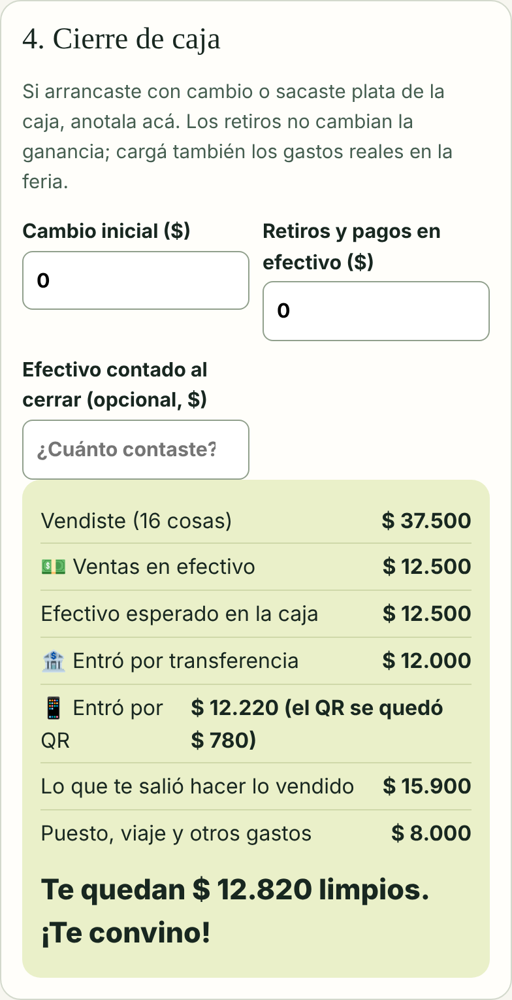

Organizá tu feria y cerrá la caja sin vueltas
Anotá cada venta, controlá el stock, compará el efectivo esperado con el que contaste y mirá cuánto te quedó. El kit completo anda sin internet.
Probar la Caja de feria gratisAsí te cierra la caja
Un día de feria de ejemplo: alfajores, budines y dulces, cobrados en efectivo, transferencia y QR. La Caja te dice cuánta plata tenés que tener en la mano, cuánto se quedó el QR y cuánto te quedó limpio.

Qué trae el kit
- Caja de feria completa: guardá tus jornadas, registrá ventas por cantidad y medio de cobro, controlá stock, hacé el arqueo de efectivo y descargá una copia de seguridad.
- Cuántas vender para cubrir la feria
- A cuánto vender cada unidad de la tanda
- Cuándo reponer
El kit incluye la Caja completa y las tres herramientas descargables. En la prueba gratis, la Caja no guarda automáticamente; podés exportar una copia. En la edición completa sí quedan guardadas tus jornadas en el dispositivo.
$4.900 · pago único
Comprar el kit en WecitoPagás con Mercado Pago. Wecito te manda el archivo por mail cuando se confirma el pago.
Un ejemplo
Si entre puesto y nafta gastás $43.000 y cada cosa que vendés te deja $5.400, con 8 ventas cubrís el día. Desde la novena, ganás.
¿Sos de San Luis?
Mirá dónde hay ferias, cuándo y cómo anotarte.
Pasale esta página a alguien que vaya a la feria.